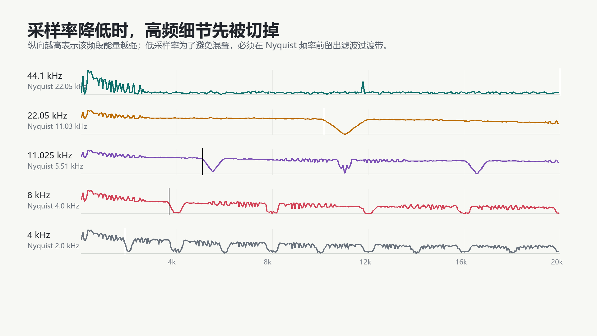
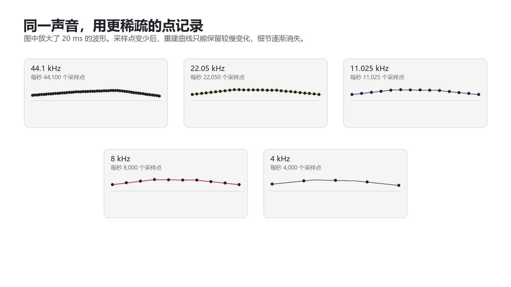

44.1 kHz
Nyquist 频率 22.05 kHz，作为参考版本。
Audio experiment / 10.5 seconds
按 44.1 kHz、22.05 kHz、11.025 kHz、8 kHz、4 kHz 的顺序试听，留意高频细节如何减少。最后比较两个 8 kHz 版本，分辨带宽损失与混叠。
下方标签表示模拟的采样率。所有音频经过相应处理后，都重建成 44.1 kHz、单声道 WAV 供播放器使用。素材为合成测试乐句。
点击下方播放器开始试听。
Nyquist 频率 22.05 kHz，作为参考版本。
Nyquist 频率约 11.03 kHz，较高频的成分开始减少。
Nyquist 频率约 5.51 kHz，继续比较泛音和明亮感。
Nyquist 频率 4 kHz，低通处理使声音更闷。
Nyquist 频率 2 kHz，只保留较窄的频带。
与第四段比较：超出 Nyquist 频率的成分会折回到较低频率。
What to listen for


试听采用有限长度音频、FFT 低通和线性重采样；这是课堂演示处理链。其数值结果与理想无限长度 Sinc 重建有所区别。